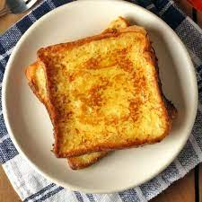

Toast

Description
Toast is very lovely, but hard to make. It requires a lot of skill and patience
if you want it to come out right - not something for beginners!
If you follow the instructions below to the letter, you should be OK though.
Just don't hurry!
Ingredients
Steps
- Using a sharp knife, cut two slices from your loaf
- Place them in your taoster - one slice in each slot
- Depress the lever to start the toaster
- When the cooked break pings up, remove it from the toaster
- Smear one side of each slice of toast with some butter
- Eat it